1. 蓝底课程页是骨架
几乎每个概念、章节、总结都会回到 Ahrefs 标志性的蓝底页。它像课程里的黑板：承接定义、清单、章节名和阶段性结论。
这不是单纯的录屏教程，也不是纯 MG。它的核心模式是：蓝色课程页搭结构，真实网页和工具录屏给证据，少量高亮层控制视线。它很适合学习“教程型 explainer”如何把复杂知识讲稳。
这次最重要的方法论不是某个高亮效果，而是拉片顺序：先看全片结构，再选代表片段精看。否则很容易把 2 分钟里的“网页高亮”误判成整部片子的唯一风格。
下面每张图按 30 秒抽一帧。粗看可以先不读细节，只看画面类型怎样轮换：蓝底课程页、真实网页、Ahrefs 工具界面、Google SERP、简单图解和章节重置。
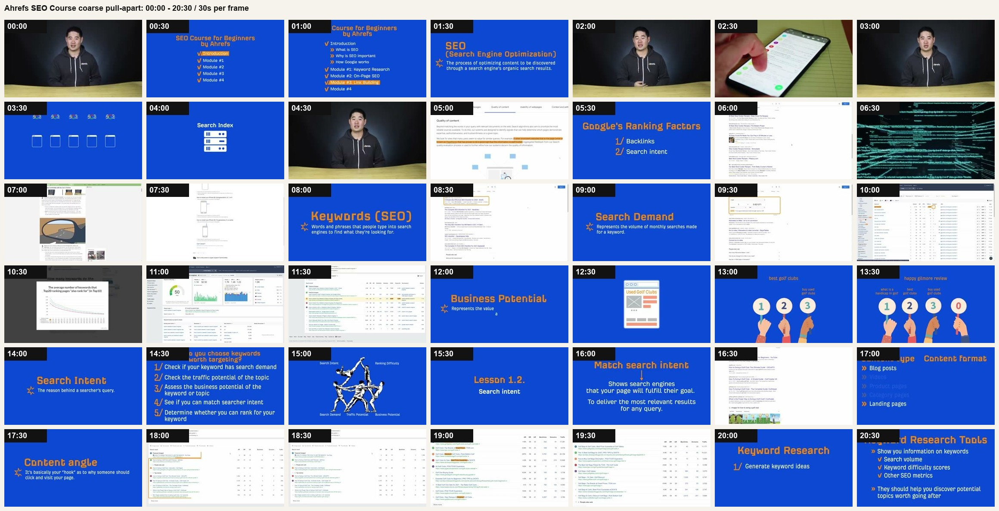
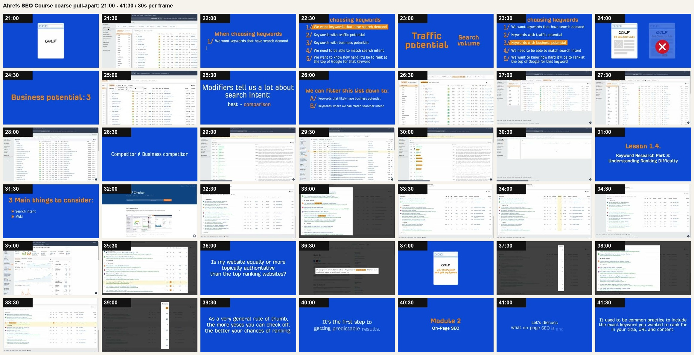
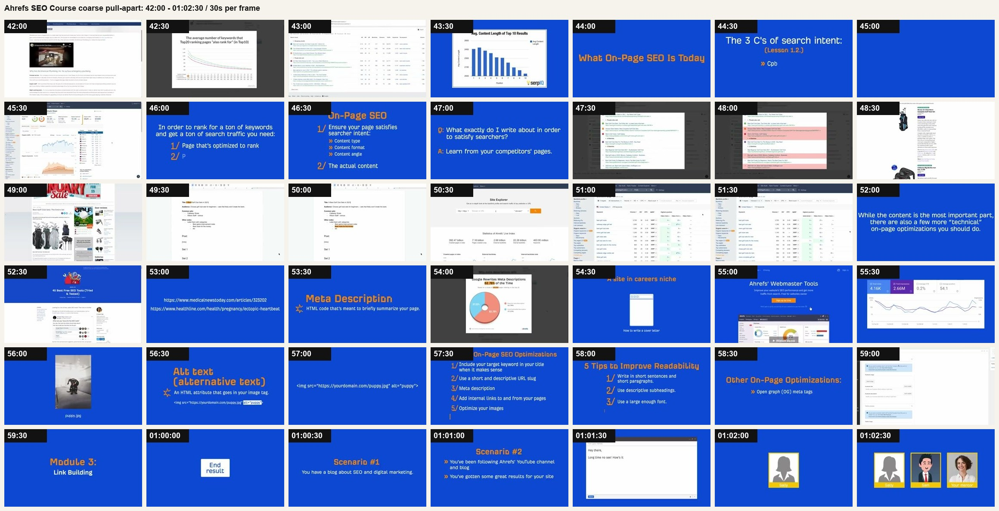
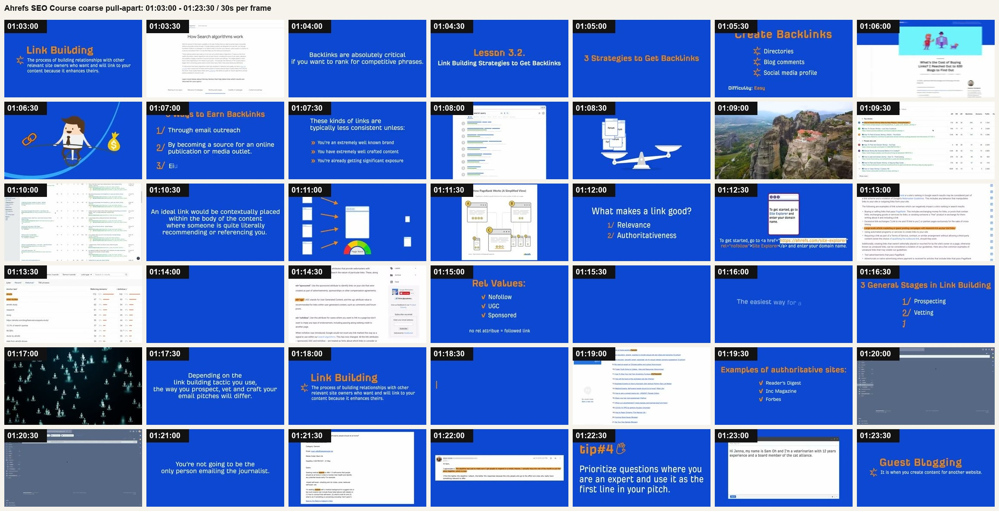
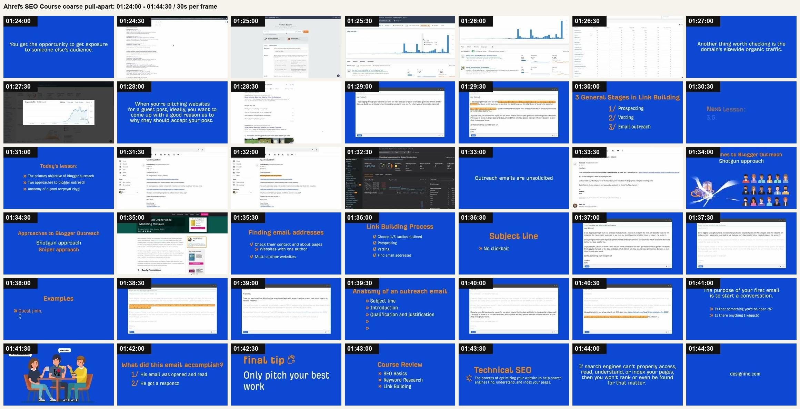
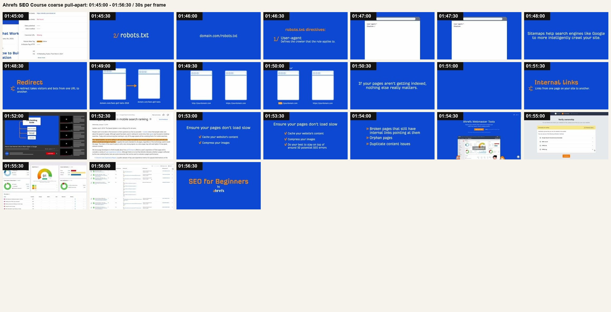
几乎每个概念、章节、总结都会回到 Ahrefs 标志性的蓝底页。它像课程里的黑板：承接定义、清单、章节名和阶段性结论。
Google 结果页、Ahrefs 工具、网页文章、邮件编辑器都不是装饰，而是让观众相信：这个判断来自真实工作场景。
橙黄色关键词块、行级高亮、局部遮罩和截图放大，只承担“看这里”的功能。它不抢主体，也不把真实 UI 重做成 MG。
当真实界面太复杂，画面会切成图标、天平、清单、卡片、流程箭头，把判断规则临时抽象出来。
长时间录屏之后切回蓝底页，观众知道一段结束、下一段开始。这比一路录屏更不累。
它不追求每句话都有新动画，而是每个判断都有对应画面。信息推进靠论证顺序，不靠视觉花活。
| 时间段 | 内容模块 | 主要画面类型 | 可学习的设计方法 |
|---|---|---|---|
| 0:00-8:00 | 开场与 SEO 基础定义 | 真人开场、蓝底课程页、少量示意图和真实页面。 | 先用真人建立可信度，再用课程页定结构；定义类内容不急着录屏。 |
| 8:00-31:00 | 关键词研究与搜索需求 | Ahrefs 工具表格、Google 结果页、蓝底清单、简单图标。 | 真实工具界面负责“怎么做”，蓝底页负责“为什么这么做”。 |
| 31:00-41:30 | 关键词难度和搜索意图判断 | SERP 表格、局部遮罩、高亮、图表和总结页。 | 复杂判断用同一界面反复标注，避免每个点都换画面。 |
| 41:30-59:30 | On-page SEO | 网页样例、图表、Ahrefs 页面、蓝底概念页。 | 网页证据与蓝底规则交替，让概念不飘，也不被网页细节淹没。 |
| 59:30-1:30:30 | Link Building | 蓝底解释、搜索结果、文章页面、邮件编辑器、简单插画。 | 流程型内容会加入更多“场景化界面”，例如邮件和联系人，而不只是工具表格。 |
| 1:30:30-1:44:30 | Blogger outreach | 邮件文本、Gmail、网页、蓝底清单、少量角色插画。 | 文本密集段落要用高亮和分段截图，不能只把一整封邮件摊给观众。 |
| 1:44:30-1:56:30 | Technical SEO 与收尾 | 蓝底概念页、浏览器窗口、工具界面、最终封面。 | 技术概念先抽象成简图，再回到工具验证；最后用封面式画面收束。 |
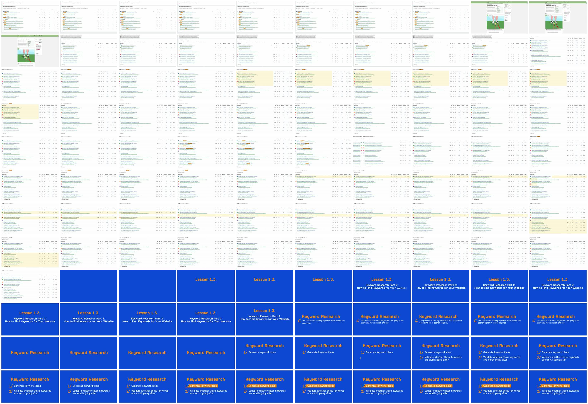
| 时间 | 旁白语义 | 画面动作 | 标注设计 | 可复用方法 |
|---|---|---|---|---|
| 18:30-18:39 | 判断 “how to swing a golf club” 的内容格式，结果几乎都是 how-to。 | 停留在 SERP overview 表格，多个标题里的 “How to” 被橙黄色小块标出。 | 关键词级高亮。只标同一词组，让观众一眼看出模式重复。 | 用 DOM 文本匹配或后期坐标跟踪，批量生成 highlight span。 |
| 18:39-18:43 | 访问其中一个排名页面，验证它确实是步骤型内容。 | 从 Ahrefs 表格切到网页页面，显示 golf 教程正文和图示。 | 不加额外高亮，只用页面本身证明“这是 step-by-step 教程”。 | 真实网页可以作为证据镜头，不必每次都加标注。 |
| 18:43-18:59 | 回到 SERP，判断 content angle：beginner / basic 是常见角度。 | 返回表格，标题中的 beginner / basic 等词被局部高亮。 | 关键词高亮从 “How to” 换到 “beginner/basic”，强调分析维度切换。 | 同一界面、同一标注样式，只替换高亮词，观众会理解“维度变了”。 |
| 18:59-19:16 | 进入 “golf clubs”：SERP 全是电商分类页，所以用户更像在购物。 | 表格切换到另一个 query，搜索结果列表更新。 | 前几行出现淡黄色行级高亮，强调“这些结果属于同一类型”。 | 判断对象从词变成整条结果类型时，高亮也从词级升级成行级。 |
| 19:16-19:47 | 继续讲 content format 不适用于电商分类页，再看 content angle。 | 画面保持 SERP 表格，局部词高亮与行级高亮交替出现。 | 同一张表上不断切换注意力，降低认知切换成本。 | 教程类视频不必每句换镜头。标注对象变化，信息就会推进。 |
| 19:47-20:15 | 第三个查询 “golf bags”：SERP 是混合型。 | 表格再次切换 query，并用行级高亮区分不同类型结果。 | 淡黄色大块把“混合 SERP”这个抽象判断变成可视区域。 | 在 HyperFrames 里可用半透明矩形 overlay，和页面滚动/缩放同轨运动。 |
| 20:15-20:30 | 结束本节，进入下一课：Keyword Research。 | 硬切蓝底课程章节页，橙色标题和项目条目出现。 | 从真实 UI 切回品牌化 slide，用颜色和字体建立章节边界。 | 长表格后需要视觉 reset，否则观众疲劳。 |
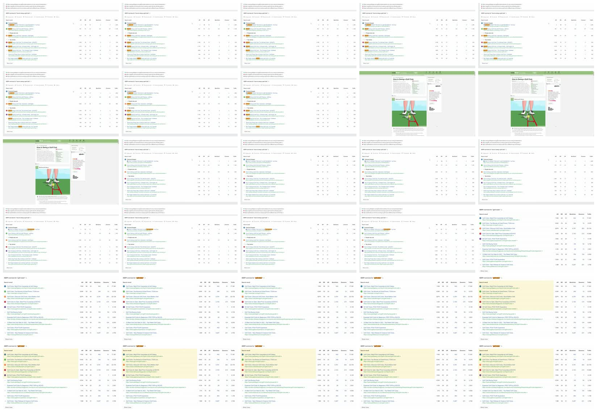
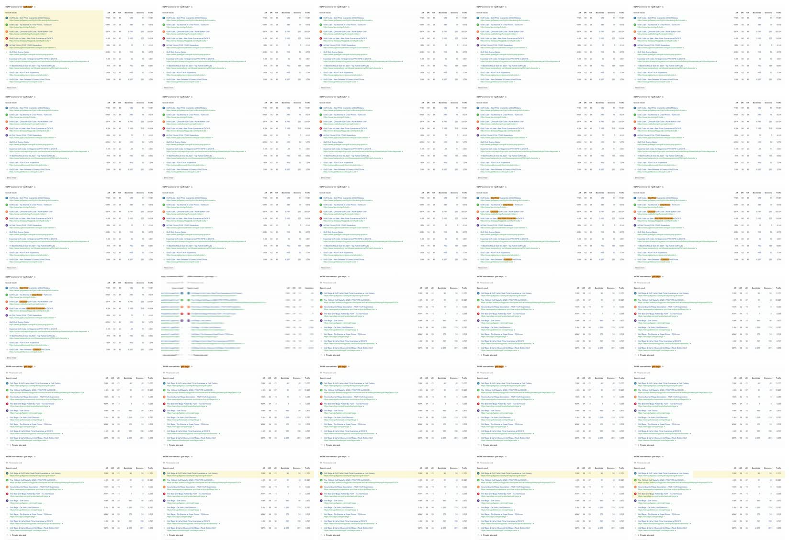
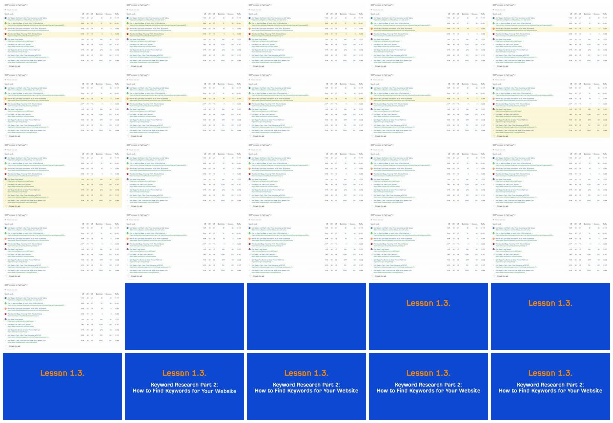
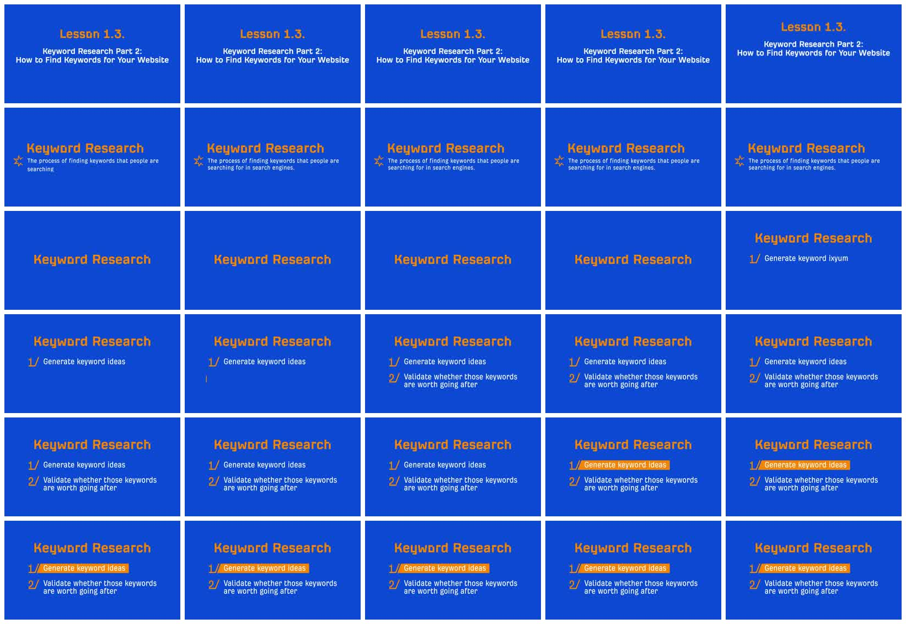
高亮块只是结果。真正该学的是：旁白每推进一个判断，画面就给一个证据；判断粒度变了，标注粒度也变。
当主题依赖真实工具、网页或数据，录屏比重绘 UI 更可信。关键是要有后期标注层和章节 reset。
这类教程的 motion 不需要一直炫。该稳定时稳定，该高亮时高亮，该切章节时果断切。
| 步骤 | 做法 | 质量标准 |
|---|---|---|
| 1. 全片粗拉片 | 先按 30 秒或 1 分钟抽帧，识别整部片子的画面类型、章节结构和重复机制。 | 能说清楚“全片靠什么模式跑”，而不是只描述一个局部特效。 |
| 2. 选代表片段 | 挑一个最能代表该模式的 1-3 分钟片段，按 1 秒抽帧，必要时再按 0.5 秒抽帧。 | 片段里必须能看到镜头如何进入、推进、退出和重置。 |
| 3. 拆画面层 | 区分底层录屏/截图、标注层、字幕层、章节页、图解层。 | 每一层的职责要明确：证据、注意力、语义兜底、章节边界。 |
| 4. 拆运动节奏 | 记录什么时候稳定、什么时候高亮、什么时候切换界面、什么时候回到课程页。 | 不要把“动得多”当成好。好的教程片经常是该停的时候停。 |
| 5. 转成模板 | 沉淀为可复用模板：课程章节页、真实界面容器、词级高亮、行级高亮、局部放大、证据切换。 | 复刻时不必重做全片风格，只需复用这几种稳定组件。 |
本页只用于学习分析，视频版权归原发布方 Ahrefs 所有。